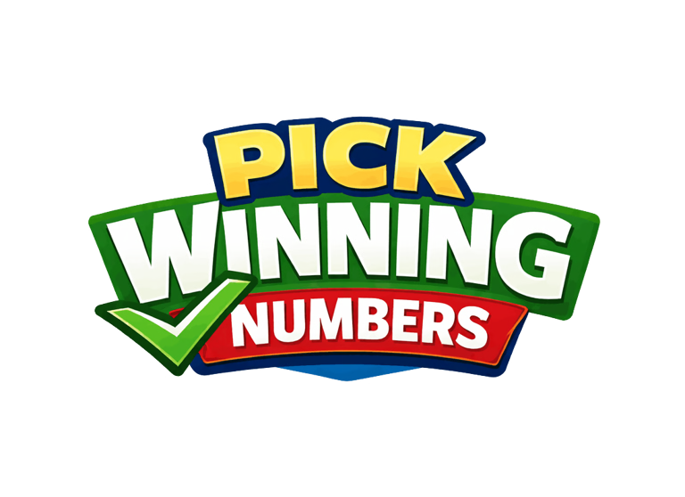

National draws first
Powerball, Powerball Double Play, and Mega Millions stay easy to find for the biggest day-to-day draws.

Get AlertsResults center
This page is now wired to the normalized XML results file and is structured to become the most useful daily utility page on the site.
Powerball, Powerball Double Play, and Mega Millions stay easy to find for the biggest day-to-day draws.
State games stay grouped together so local results are easy to browse after the national draws.
Each card keeps draw dates, number sets, jackpots, bonus balls, and update times easy to read.
Live-style cards
Results FAQ
The results page refreshes throughout the day so jackpots, next-draw dates, and new numbers stay current.
This page serves as the main results hub, with dedicated pages for the biggest games where that adds clarity.
Yes. The card structure already supports dedicated Georgia, Florida, Arkansas, and national result coverage when needed.